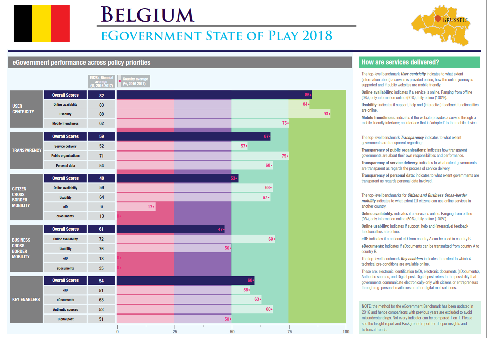
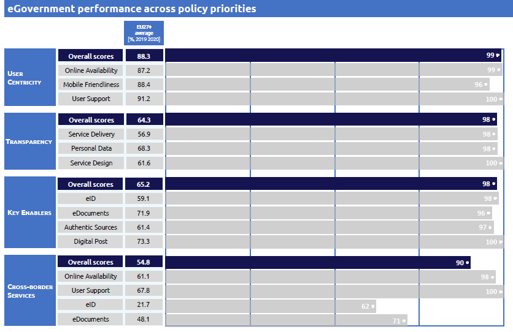
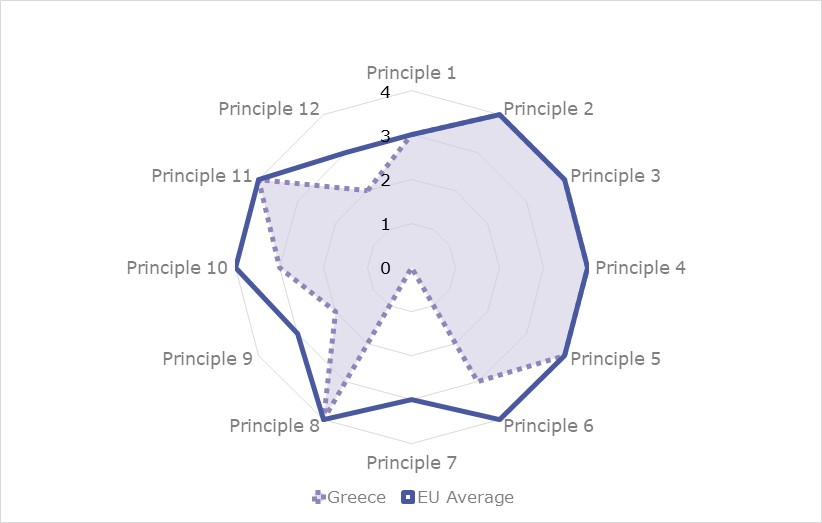
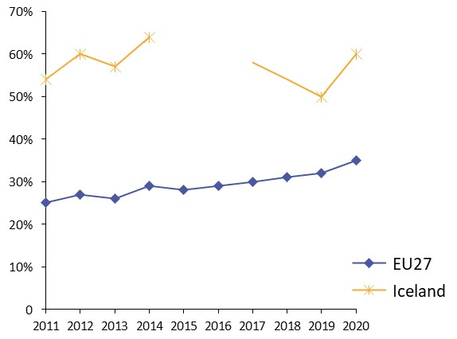
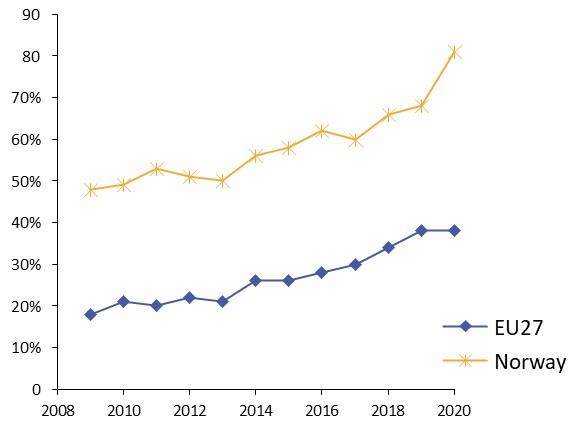

Digital Government Factsheet 2019
Belgium
Table of Contents
Digital Government Highlights 6
Digital Government Political Communications 7
Digital Government Legislation 14
Digital Government Governance 18
Digital Government Infrastructure 26
Digital Government Services for Citizens 34
Digital Government Services for Businesses 43
Country Profile
Basic data
Population: 11 398 589 inhabitants (2018)
GDP at market prices: 450 505 million euros (2018)
GDP per inhabitant in PPS (Purchasing Power Standard EU 28=100): 117 (2017)
GDP growth rate: 1.4% (2018)
Inflation rate: 2.3% (2018)
Unemployment rate: 5.9% (2018)
General government gross debt (Percentage of GDP): 103.4% (2017)
General government deficit/surplus (Percentage of GDP): -0.9% (2017)
Area: 30 688 km2
Capital city: Brussels
Official EU language: Dutch, French and German
Currency: Euro
Source: Eurostat (last update: 15 March 2019)
Digital Government Indicators
The following graphs present data for the latest Generic Information Society Indicators for Belgium compared to the EU average. Statistical indicators in this section reflect those of Eurostat at the time the Edition is being prepared.
Percentage of individuals using the internet for interacting with public authorities in Belgium | Percentage of individuals using the internet for obtaining information from public authorities in Belgium |
Percentage of individuals using the Internet for downloading official forms from public authorities in Belgium | Percentage of individuals using the Internet for sending filled forms to public authorities in Belgium |
| |
Digital Government State of Play
The graph below is the result of the latest eGovernment Benchmark report, which monitors the development of eGovernment in Europe, based on specific indicators. These indicators are clustered within four main top-level benchmarks:
- User Centricity – indicates to what extent (information about) a service is provided online and how this is perceived.
- Transparency – indicates to what extent governments are transparent regarding: i) their own responsibilities and performance, ii) the process of service delivery and iii) personal data involved.
- Cross-Border Mobility – indicates to what extent EU citizens and businesses can use online services in another country.
- Key Enablers – indicates the extent to which 5 technical pre-conditions are available online. There are: Identification (eID), Electronic documents (eDocuments), Authoritative Sources, and Digital Post. Digital Post refers to the possibility that governments communicate electronically-only with citizens or entrepreneurs through e.g. personal mailboxes or other digital mail solutions.
These top-level benchmarks are measured using a life-events (e.g. mystery shopping) approach. Eight life events are included in the overall eGovernment performance score. Four of these life events were measured in 2013, 2015 and 2017 and the other four were measured in 2012, 2014, 2016, and again in 2018. The life events measured in 2017 were Regular business operations, Moving, Owning and driving a car and Starting a small claims procedure. The life events measured in 2018 are Business start-up, Losing and finding a job, Family life and Studying.

Source: eGovernment Benchmark Report 2018 Country Factsheets
Digital Government Highlights
Digital Government Political Communications
On 6 December 2018, the Walloon Government validated the adoption of the Digital Wallonia strategy for 2019-2024. The new strategy stipulated the framework defining the direction that the region of Wallonia will take in order to seize socio-economic opportunities of digital transformation in the next five years.
Digital Government Legislation
- On 25 October 2018, the parliament of the French Community adopted key legislation on the governance framework for digital and information technology policy. The highlights included defining a set of general principles for the digital government transformation, establishing a strategic council for digital transformation providing a legal basis to governance structures, and establishing a strategic plan for digital and IT development (validity five years).
- On 7 December 2018, the Flemish administration adopted a public governance decree which incorporated previously separate decrees on the Steering Committee for Flemish Information and ICT policy, on electronic intergovernmental data exchange, and on the re-use of public sector information. It addressed the use of base registries and the adoption of the once only principle in the Flemish administration and the local administrations.
Digital Government Governance
In 2018, the Steering Committee for Flemish Information and ICT policy became fully active as the main governance body for Flemish information and ICT policy. It adopted important new policies such as an API First strategy for service development, and a Public Cloud First strategy for service deployment.
Digital Government Infrastructure
- In the Wallonia-Brussels Federation, a new version of Mon Espace portal was launched specifically for teachers. The portal allowed teaching staff in Belgium to check an array of useful documents and services linked to their profession.
- The Flemish administration launched a new programme, Webplatform Flanders, to create a set of tools and solutions to facilitate the creation of one-stop shops for digital service delivery by Flemish administrations.
- The Belgian eID was officially notified (cfr. eIDAS) and peer reviewed with success. The Identity and Access Management Platform of the Flemish government now supports identification and authorisation of users using eIDAS-approved digital identities.
- 36 Belgian geodata sets regarding the environment were made available on the European INSPIRE geoportal.
Digital Government services
- My unemployment file: allows citizens to consult their unemployment file online.
- MyPension.be: allows pensioners to consult their pension file.
- License plate: allows citizens to check the status of their request for a car registration, a number plate or a chassis number.
- My health record: allows citizens to consult specific health related information.
Digital Government Political Communications
Specific political communications on digital government
Vision, objectives and actions
Five priorities of the strategy
- Digital economy;
- Digital infrastructure;
- Digital skills and jobs;
- Digital trust and digital security;
- Digital government.
A number of new initiatives were started. The Start-up Plan, for example, was a concrete first step to encourage young and beginning entrepreneurs to set up new businesses in innovative sectors via initiatives such as tax shelters for start-ups and fiscal incentives for crowdfunding. There was also an initiative to roll-out eInvoicing for suppliers. Further initiatives are to be launched such as the National Alliance for Digital Skills and Jobs, a plan for a roll-out of high-speed internet, a Digital Health Valley, Digital Act (a series of legal propositions enabling the use of electronic signatures, digital archiving, and similar, to replace paper), deployment of the federal cloud, mobile authentication for eGovernment applications, a multi-directional digital communication platform and an open data strategy.
Federal eGovernment Strategy (2009 - present)
Vision, objectives and actions
The Federal eGovernment strategy for the social sector aims to create a single virtual Public Administration while respecting the privacy of users, as well as the specificities and competences of all Government bodies and administrative layers.
Its main objective is to improve the delivery of public services for citizens and businesses by rendering it faster, more convenient, less constraining and more open.
The current strategy is outlined thus:
- Formulation of specific objectives, like the optimal service delivery to citizens, the limitation of administrative burden and the optimisation of the efficiency and effectiveness of public services;
- Explicit choice of a collaboration among all stakeholders in order to create added value for users of eGovernment services;
- Use of a common vision for the use of information in terms of modelling information, mandatory reporting of supposed errors, electronic exchange of information, unique collection of information;
- Use of a common vision for information security and protection of privacy;
- Maximum use of common elements for networks, eID, middleware interconnected and related basic services;
- Role of the Crossroads Bank for Social Security (CBSS) as a driver for the development of eGovernment in the social sector;
- Establishment of a strong partnership among all social security institutions.
Four strategic streams
To meet the objectives stated above, the Belgian eGovernment strategy has been based in the past on four main strategic streams:
- 1st stream: Re-engineering and integrating service delivery
This first stream focused on user needs, life events and simplification of all administrative procedures.
- 2nd stream: Cooperation among all levels of Government to provide integrated services across organisational boundaries and administrative layers. The second stream was based on two documents. First, the eGovernment cooperation agreement, signed in March 2001 by the Federal, Regional and Community authorities, laid down a framework of cooperation according to which all layers of Government were committed to use the same standards, the same identification infrastructure and the same eSignature. Second, the cooperation agreement on the principles of a seamless eGovernment, signed in April 2006, with the objective to use ICTs that provide information to all citizens, businesses and public institutions in a user-friendly way.
- 3rd stream: Simplification of administrative procedures for citizens and businesses.
This requires an increased exchange and sharing of both data and information among Government Departments and Agencies.
- 4th stream: Back office integration and protection of personal data.
The Department or Agency that requires specific data will be considered most frequently as a trusted source by other administrations that may need such data. Hence, the Department or Agency in question will be responsible for maintaining a personal data repository.
Digital Wallonia 2019 – 2024
On 6 December 2018 the Walloon Government adopted its Digital Wallonia strategy for 2019-2024. The new strategy articulated the framework to define the direction that the region of Wallonia will take to seize the socio-economic opportunities of the digital transformation in the next five years. The new strategy is the result of the work of the Digital Wallonia Champions.
This strategy is structured around five major and structuring themes:
- Digital sector;
- Digital Economy;
- Digital administration;
- Digital territory;
- Digital skills.
Under the new strategy, the rollout of the Digital Wallonia brand will continue, as well as the development of its online platform.
Plan Marshall 4.0
Plan Marshall 4.0 is the name given to the intended comprehensive transformation plan for Wallonia region. The plan includes five high priority areas to strengthen Wallonia’s economy, with the fifth supporting digital innovation. As part of this fifth measure, the Walloon Government foresees development of a modern public administration, Administration 4.0 (see measure V.2 of the plan).
To this end, the Walloon Government will:
- Develop a channel for interaction with administrations by developing a catalogue of public services, finalising the implementation of electronic offices so that all users can perform necessary actions through the web;
- Develop the Crossroads Bank for Data Exchange (CBDE) by consolidating the services offered to Walloon administrations by the CBDE, and develop new sources of authentic Walloon data.
The Plan Marshall 4.0 also includes a broader Digital Wallonia strategy, fostered by ADN (Agence du Numérique, Walloon agency for digital).
Administration contract of the Public Services of Wallonia
This master plan for the public services aims to set up a global, integrated and consistent roadmap with precise goals, proper governance and adequate funding. This is the first time such a master plan has been put together in the Walloon region.
The contract is based on a global user-oriented strategy, with a multi-channel approach.
The plan includes the roll-out of many projects related to digital government, mainly:
- Digitisation of the environmental & pollution licensing services;
- Digitisation of tax services (citizen and businesses will be able to access their tax files online);
- Online management of local officers’ mandate declarations;
- Development of reference databases regarding environmental data;
- Development of geospatial data in compliance with the INSPIRE Directive.
More information can be found here.
Administration contract of the Ministry of the Wallonia-Brussels Federation
This master plan for the public services is a first-time effort to set up a global, integrated and consistent roadmap with precise goals, proper governance and adequate funding.
Among the main objectives of the plan are:
- Development of an eGovernment strategy, with the aim of doubling available online services and the setting up of personal user accounts to better manage one’s relationship with the administration;
- Development of reference databases regarding students and diplomas.
More information can be found here.
Digital Strategy of Wallonia and the Wallonia-Brussels Federation
The Digital Strategy of Wallonia was adopted in December 2015 by the Walloon Government and the French Community. The strategy marked the Walloon Government’s stated ambition to transform Wallonia into a connected and intelligent territory, one where technological companies are recognised leaders at the global level and are a driving force behind the region’s successful industrial transformation. The Digital Strategy of Wallonia is one of the main contributors to the creation of Digital Wallonia.
The strategy includes five main themes for achieving the digital ambition of Wallonia. Each theme is structured into strategic objectives and development axis. It is hoped that through their complementarity and interaction, the themes, objectives and axes will foster the digital transformation in Wallonia. There is a total of 5 themes, 9 strategic objectives and 23 priority development axes. The five themes are:
- Economy of the numeric: this theme focuses on the creation of a strong technological sector through a growth program, which aims to give Wallonia’s digital sector an international dimension.
- Economy of the digital: this theme focuses on increasing the digital capabilities of companies, essential for the emergence for the development of connected commerce.
- Connected and intelligent territory: this theme aims to achieve full high-speed connectivity in Wallonia.
- Open utilities: this theme aims to foster open and transparent digital public services.
- Skills and employment: this theme focuses on developing the digital skills of Wallonia’s citizens.
The Walloon Government earmarked more than EUR 500 million for the implementation of the strategy over a period of four years.
eGovernment Strategy of Flanders
In the Flemish Region, the eGovernment strategy is placed under the responsibility of the Deputy Minister-President of the Flemish Government. It is managed by the new Flanders Information Agency created in 2015 as the fusion of the Coordination Cell Flemish eGovernment (CORVE), the Vlaamse Infolijn (the Flemish Government call-centre), the Flanders Geographical Information Agency (AGIV) and part of the Department Administrative Affairs. This new agency is responsible for the new eGovernment programme Vlaanderen Radicaal Digitaal (Flanders radically digital), which aims to have Flemish Government services fully digitally by 2020. It will also ensure that the principle of the once only collection of data (known as the MAGDA principle) is acknowledged by the entirety of the Flemish administration.
The main responsibility of the Flanders Information Agency was to determine the strategic aims and priorities for the transformation of the Flemish government into a data-driven government, while taking part in eGovernment projects in an advisory and supportive role. The agency was also in charge of developing eGovernment-related knowledge and skills, coordinating and providing incentives, and creating a generic eGovernment infrastructure to facilitate cooperation among the different entities within Flanders administration. This generic eGovernment infrastructure consisted of a number of eGovernment building blocks (electronic identification and trust services, electronic documents, eProcurement, authentic sources, etc.) that could be used as shared systems to improve existing (electronic) service delivery & streamline government operations. The agency provided additional funding for cross-departmental eGovernment projects (Vlaanderen Radicaal Digitaal projects).
A key policy element in this eGovernment policy was the development of authentic sources of information. These were databases that can be used to obtain complete, correct and up-to-date data on businesses, natural persons, addresses, plots, buildings, maps, etc. A comprehensive system of Flemish authentic data sources and related services is now being built. In parallel to that, a SOA-based infrastructure called the MAGDA platform was introduced in February 2006, to enable the integration of government data exchange services and facilitate both the access to authentic data sources and the data exchange among public bodies. In the past eight years, more than EUR 10 million has been invested in this platform. In 2013, the roll-out of the MAGDA 2.0 platform was completed, a new version of the platform which provides additional data exchange facilities (web services, file transfer etc.), while at the same time requiring lower operational costs. In 2017, the migration of this very successful platform to a cloud-based environment began.
In the Flemish eGovernment Strategy 2009-2014, the Flemish Minister responsible for eGovernment, Geert Bourgeois, called upon eGovernment to focus its efforts on developing integrated solutions, contributing to administrative simplification and increasing government efficiency. This included renewed attention to the creation of authentic data sources, and specific attention towards eParticipation, green ICT and the use of open data. A key challenge during this period was extending the back-end eGovernment services provided by the MAGDA platform towards all the local government organisations.
In the new Flemish eGovernment Strategy 2014-2019, the Flemish Minister responsible for eGovernment, Liesbeth Homans, aimed to ‘radically digitally’ transform the Flemish administration, by going for a digital first approach in the (increasingly mobile) delivery of new (or existing) Flemish government services. In this transformation, the focus was on a customer-centred approach in the design of these digital government services, and on the development of new eGovernment building blocks (such as a personalised portal page for citizens and enterprises, with single sign-on and secure electronic document delivery) that would made available for integrated eGovernment use by the local government organisations. Open data would be the norm as far as the availability and possible re-use of government data was concerned.
eGovernment Strategy of the Brussels-Capital Region
In May 2014, after the elections, the Government unveiled its policy. Highlights included:
- Brussels Smart City: make Brussels the Digital Capital;
- Go as far as possible in the online administrative management;
- Hotspots in every public transport stop;
- Extend and simplify Irisbox, the regional one-stop-shop.
Key enablers
Access to public information
Federal Open Data Strategy (2015 - 2020)
Charter on Open Data use by local authorities
The Smart Flanders initiative embraced the Charter on Open Data, a project included 20 principles such as open-by default and machine-readable data so that local authorities could foster an open data ecosystem.
The Open Data Charter was approved in the summer of 2018 and ratified by 13 Flemish cities. To put the Charter into practice, a dedicated document was developed with sample clauses that can be used in tenders, concessions and contracts to make arrangements with suppliers about (Linked) Open Data. The use of these formulations was recommended to strive for a more joint approach to Open Data.
eID and Trust Services
No political communication was adopted in this field to date.
Security aspects related to digital government
No political communication was adopted in this field to date.
Interconnection of base registries
No political communication was adopted in this field to date.
eProcurement
No political communication was adopted in this field to date.
Domain-specific political communications
No political communication was adopted in this field to date.
Interoperability
In line with the revised European Interoperability Framework (EIF), the Belgian federal government and the regions have agreed to use the 12 principles of the EIF as the basis for defining their interoperability.
A number of recommendations are derived from these principles. The 47 recommendations are also endorsed within the context of BelgIF as a valuable foundation for the definition of architecture, applications and solutions for data exchange and interoperability within and between the federal government and the communities and regions.
The main integrators supporting the implementation of BelgIF are the Flanders Information Agency, BCED, the Crossroads Bank for Social Security, Federal Public Service BOSA, eHealth portal, and FIDUS.
The BelgIF website also lists the main building blocks enabling and supporting interoperability in the country: the G Cloud, Federal Service Bus, FedMAN, eBirth, and CSAM.
Digital Transformation Office strategy
Within the newly created Federal Public Service for Policy and Support, the Digital Transformation Office (DTO) implements the Belgian Digital Agenda, which is based upon the EU Digital Agenda 2020.
Functions & Services
The Digital Transformation Office’s main functions are:
- To support federal government with digitalisation;
- To be a driving force for innovation & digital transformation of the federal government;
- To advise on technology & projects from an enterprise and citizen centric perspective.
The Digital Transformation Office’s main services are:
- Developing the digital strategy and standards for the federal government;
- Executing and monitoring the digital transformation of the federal government;
- Developing transversal digital services and platforms like Digital Communication services, Life events, Operations & Infrastructure Services;
- Overseeing the G-Cloud strategic board and committees while reporting to the federal government.
EIRA
In order to support this strategy, DTO has, together with the Belgian Regional governments, adopted the European Interoperability Framework (EIF) as reference for the Belgian Interoperability Framework (BelgIF). Recently, DTO mapped their architecture upon the European Interoperability Reference Architecture.
This allows DTO to:
- Communicate the DTO enterprise architecture in a standardised way;
- Detect gaps in existing DTO architecture;
- Make use of the available Solution Architecture Templates to complete the DTO architecture;
- Compare the DTO architecture with the architecture of other Belgian and EU partners (on the condition that they also have their architecture built according to EIRA), and in this way, detect gaps and overlaps between different architectures.
Emerging technologies
Flanders’ Action Plan on Artificial Intelligence
Flemish Minister for Innovation Philippe Muyters announced that he will make 30 million euros available in the coming years to put Flanders in the lead for artificial intelligence. The Money will be absorbed by the economy through a dedicated Flemish AI Action plan signed in March 2019.
The Flemish AI plan is made up of three major components: research, applications at companies and a supporting policy on education, awareness-raising and ethics.
- Research: money will be invested in strengthening the internationally recognised research programmes of Flanders. Special attention will be given to leading AI technology platforms with clear market potential.
- Industry applications: according to the action plan, Flanders can be in the lead for the application of AI in the business world. It will aim to achieve this by acting as a laboratory for Flemish and international applications.
- Education, awareness and ethics: in Flanders, there is a need for broad awareness about the disruptive potential of AI technology. The action plan foresees several training programme and a set-up of a dedicated AI Think Tank to address the ethical implications that AI entails.
- Policy support on Ethics, Regulation, Skills and Competences;
- Provide Belgian AI cartography;
- Co-animate Belgian AI community;
- Collect EU funding and connect EU ecosystems;
- Propose concrete action for training in AI;
- Contribute to the uptake of AI technologies by the industry;
- Make new products and services based on AI technologies emerge.
G-Cloud Programme
The G-Cloud programme is the result of a joint initiative of several public institutions: federal public services, social security institutions and the care sector. The Cloud Governance Board controls its implementation.
The development of this government-based community cloud is laid out in a joint roadmap. The first-generation G-Cloud services became operative since March 2015 and many improvements are still being implemented.
The G-Cloud is a hybrid cloud service which uses services provided by private companies operating in public cloud environments and services hosted in government data-centres. The G-Cloud is managed by the Government. Its expansion and operational functioning rely on a large extent on private sector services.
The G-Cloud services operate in four different domains. The services offer is gradually being extended and improved, based on the actual needs of the participating institutions. Infrastructure-as-a-Service (IAAS), Platform-as-a-Service (PAAS) and Software-as-a-Service (SAAS) are all included. The G-Cloud program will also encompass synergy initiatives in the field of classic ICT undertaken from the government. New services will be added upon their availability.
The 'hard' infrastructure services ensure that government applications are able to run in a reliable physical environment including data-centre housing, servers and storage. The complete virtual capacity can be flexibly modified in a fully managed IAAS environment (Infrastructure-as-a-Service). They are supplemented by 'soft' infrastructure, which allows for high-quality back-ups, security & identity and authorisation management.
Platform-as-a-Service services are mainly focused on developing the new generation of software: cloud-enabled and cloud-native applications using the latest architecture. Generic online applications via Software-as-a-Service for translations, document management, website management and IT service management etc. are at the top.
Digital Government Legislation
Specific legislation on digital government
Governance framework for the digital and information technology policy
On 25 October 2018, the Parliament of the French Community adopted key legislation on the governance framework for the digital and information technology policy. The governance framework is an important piece of legislation, as:
- It defines general principles for the digital government transformation;
- It establishes a strategic council for digital transformation;
- It gives a legal basis to the governance structures;
- It establishes a strategic plan for digital and IT (validity five years) development in the French community.
Key enablers
Access to public information
Law on the right of access to administrative documents
The right of access to documents held by the public sector is guaranteed by Article 32 of the Belgian Constitution. It was amended in 1994 to provide everyone with the right to consult any administrative document and have a copy made, except in the cases and conditions stipulated by the laws, decrees or rulings referred to in Articles 39 and 134. Government Agencies must respond immediately, or within thirty days in case the request is delayed or rejected.
The 1997 Law relative to publication of information by Provinces and Municipalities provided for the same type of transparency obligations for provinces and municipalities. Furthermore, the Flanders Region/Community (lastly amended in 2007), the French Community (lastly amended in 2007) and the Brussels-Capital Region (lastly amended in 2010) have also adopted their own legal acts on the right of access to administrative documents.
Law on the re-use of public sector information
The law of 4 May 2016, adopted at federal level, replaced the law of 7 March 2007 which transposed into Belgian Law the general principles governing the re-use of public sector information in line with the provisions of the EU Directive 2003/98/EC.
Royal Decree establishing the procedures and time limits for the handling of requests for public sector information re-use
This Royal Decree of 29 October 2007 regulated formal aspects related to the procedure and timelines for handling requests for public sector information re-use. In addition, regional and community governments were required to equally transpose the Directive on the re-use of public sector information. Flanders, the Brussels-Capital Region and the French and German-speaking Communities also have their own decrees which were inspired from the relevant federal legislation. In 2016, the existing Flemish decree on re-use of public sector information was adapted to be in line with the new European Directive.
eID and Trust Services
Law on electronic identification
Belgian law on electronic identification, dated 18 July 2017, completed the eIDAS Regulation. Under the new law, the following procedures applied:
- Each Belgian public-sector body determined the required assurance level for access to its services and informed the Digital Transformation Office (DTO) about this;
- DTO determined the assurance level of Belgian electronic identification means to be notified to the European Commission and notified the Belgian electronic identification providers;
- DTO was designated as Belgian hub for IT cross-border exchange and passed a minimum set of person identification data to the node of another Member State when a user wanted access to an online service in that second Member State.
To enable mobile identification, the Federal Public Service Policy and Support (FPS P&S) drew up the Royal Decree of October 22 2017. This Royal Decree set out the rules governing the recognition of private electronic identification services, and mobile services in particular. Working with private partners allowed the Government to keep costs under control and foster innovation. These external identification services, developed and operated by private sector companies, were added to the CSAM platform devised by the FPS P&S and complemented the set of digital keys that already existed.
eSignature Act and legal framework on electronic identification
Adopted on 9 July 2001, the eSignature Act transposed into Belgian Law the EU Directive 1999/93/EC on a Community framework for electronic signatures. It gave legal value to electronic signatures and electronically signed documents while setting up a legal framework for certification services.
It is worth mentioning that on a regional level, a law on electronic forms signed with the eID card of December 2006, and two related decrees of July 2008 were adopted by the Walloon Parliament and the Walloon Government respectively. These decrees gave the same legal value to electronic forms as paper forms.
Moreover, the legal framework for the use of electronic identity cards was set in a series of Royal and Ministerial Decrees, namely: the Royal Decree of 25 March 2003 on the legal framework of electronic ID card; the Ministerial Decree on the format of electronic ID cards of 26 March 2003; the Royal Decree on the generalisation of electronic ID cards of 1 September 2004; and the Royal Decree on the eID document for Belgian children under 12 of 18 October 2006.
Law on the use of Electronic Signature in Judicial and Extra-Judicial Proceedings
This law of 20 October 2000 introduced the use of the electronic signature within judicial and extra-judicial proceedings. It was the first law to address the eSignature issue in Belgium. The law was lastly amended in September 2006.
Security aspects related to digital government
The Flemish Data protection decree
Adopted on 8 June 2018, the Flemish Data protection decree adapted existing Flemish decrees to the new legal rights and obligations introduced by the General Data Protection Regulation (EU) 2016/679.
Law on the protection of private life with regard to the processing of personal data
The Privacy Law of December 1992, is intended to protect citizens against the abusive use of personal data, defined the rights and duties of both the data subject and its predecessor. It provided the legal basis for the creation of an independent body in charge of overseeing the correct use of personal data, the Commission for the Protection of Privacy. This law was significantly modified in 1998 to transpose the EU Directive on the protection of individuals with regard to the processing of personal data and on the free movement of such data (95/46/EC). This law was enacted in a consolidated version in August 2007.
In addition, a specific law containing provisions relating to spamming was adopted on 24 August 2005. It transposed the EU Directive 2002/58/EC on privacy and electronic communications (the ePrivacy Directive).
Interconnection of base registries
Flemish Public Governance Decree
Adopted on 7 December 2018 the Flemish Public Governance decree significantly streamlined and simplified the digital government framework. The decree incorporated previously separate decrees on the Steering Committee for Flemish Information and ICT policy, on electronic intergovernmental data exchange and on the re-use of public sector information.
This decree, amongst other topics, dedicated extensive attention to the use of base registries and the adoption of the Once Only principle in the Flemish administration and local administrations. The decree defined the criteria for the recognition of Flemish base registries and specified their management. It introduced the Once Only obligation to use base registries in Flemish administrative processes (the citizen may refuse to give his/her data more than once), with the obligation to notify back any errors found in these base registries.
Law on eBox
A new law was adopted into Belgian law on 14 March 2019. It stipulated the provisions of eBox, an electronic mailbox that can be used by specific public and private actors for electronic communications with Belgian citizens and registered companies and organisations, including registered mail.
eProcurement
Law on public procurement and several public works contracts, public supply contracts and public service contracts
This law of 15 June 2006 was amended on 12 January 2007 and published in the Belgian Monitor of 15 February 2007.
eInvoicing legislation
In Belgium, the responsible entity for eInvoicing is the Federal Public Service Policy. However, other public services at the federal and regional levels may share part of the responsibility.
There is no overall legislation in place for the country as a whole. In Flanders, B2G eInvoicing is mandatory for regional contracting authorities. At the federal level they are mandatory for contracts above EUR 135 000.
eInvoicing is not mandatory. Nonetheless, economic operators are encouraged to submit, and central, regional and local contracting authorities and entities to receive, eInvoices.
The central gateway between private and public sectors is the Mercurius platform.
Law on the acceptance of bids, information to candidates and tenderers, and time limits on public procurement and several public works contracts, public supply contracts and public service contracts
This law of 16 June 2006 was amended on 23 July 2009, and finally adapted by the Royal Decree of 10 February 2010.
It transposed into Belgian Law the EU Directives on public procurement, the Directive coordinated the procurement procedures for entities operating in the water, energy, transport and postal services sectors (2004/17/EC), and also the Directive on the coordination of procedures for the award of public works contracts, public supply contracts and public service contracts (2004/18/EC). They defined electronic means of procurement as having the same legal value as that of traditional means. In addition, they defined new concepts based on public procurement directives, particularly the electronic auctions and Dynamic Purchasing System.
Domain-specific legislation
Decree on primary care
The new decree, the text of which was adopted by the plenary on 3 April 2019, laid down the provisions for the organisation of primary care in Flanders and introduces a digital care and support plan for patients.
Interoperability
No legislation was adopted in this field to date.
Emerging technologies
No legislation was adopted in this field to date.
Digital Government Governance
National
Policy
 | Alexander De Croo Deputy Prime Minister and Minister for Development Cooperation, Digital Agenda, Post and Telecom Contact details: Strategy Unit of the Minister for Development Cooperation, Digital Agenda, Post and Telecom Finance Tower Boulevard du Jardin Botanique 50 b 61 B-1000 Brussels Tel.:+32 2 792 99 00 Email: info@DeCroo.fed.be Source: http://www.alexanderdecroo.be/;www.digitalbelgium.be |
Theo Francken State Secretary for Asylum and Migration, in charge of Administrative Simplification, linked to the Minister for Safety and Internal Affairs Contact details: Ministry of the Interior Wetstraat 18 1000 Brussel Tel: +32 2 206 14 21 E-mail: cab.dvz@ibz.fgov.be Source: http://www.theofrancken.be/ |
Federal Government Department for Information and Communication Technology (Fedict)
Ben Smeets Director General Digital Transformation Office Contact details: SPF BOSA WTC III Direction générale Transformation digitale Boulevard Simon Bolivar 30, 1000 Brussels Tel.: + 32 2 740 75 00 E-mail: secretariat.dto@bosa.fgov.be Source: https://dt.bosa.be |
Agency for Administrative Simplification
The Agency for Administrative Simplification is responsible for drafting strategic measures for the simplification of all administrative actions imposed by the State in everyday business exchanges.
Crossroads Bank for Social Security (CBSS)
The Crossroads Bank for Social Security elaborates the eGovernment strategy within the Belgian social sector and coordinates the implementation of the eGovernment projects in this sector.
Frank Robben General Manager of the Crossroads Bank for Social Security (CBSS) Contact details: KSZ-BCSS Chaussée Saint-Pierre 375 1040 Brussels Tel.: + 32 2 741 84 02 E-mail: Management@ksz-bcss.fgov.be Source: http://www.ksz-bcss.fgov.be/ |
Coordination
Digital Transformation Office (BOSA) - Federal Department for ICT
The Digital Transformation Office (BOSA) helps government departments and agencies to elaborate and initiate their eGovernment projects, and coordinates their implementation.
Implementation
Digital Transformation Office (BOSA) - Federal Department for ICT
Federal Departments and Agencies
Federal Departments, Ministries and Agencies are responsible for implementation of individual or joint eGovernment projects falling within their respective areas of competence.
Support
Digital Transformation Office (BOSA) - Federal Department for ICT
The Digital Transformation Office (BOSA) provides assistance to all entities in the public sector by supporting their ICT projects.
Agency for Administrative Simplification
Created in December 1998, the Agency for Administrative Simplification assists Government departments and bodies in their endeavours to simplify their administrative internal and external procedures. More specifically, it is in charge of simplifying administrative procedures for businesses, especially small and medium-sized enterprises and the self-employed.
Crossroads Bank for Social Security (CBSS)
BELNET
The Government Agency BELNET, part of the Federal Science Policy Office, supplies secure Internet access with very high bandwidth to end users in education institutions, research centres and public administrations. In addition, BELNET is in charge of the operation of the federal network FedMAN.
Base registry coordination
Federal Government Department for Information and Communication Technology (Fedict)
- Unite all national service integrators (three federal and one for every region);
- Coordinate the way of working between the service integrators;
- Monitor all authoritative data disclosed by service integrators (not bilateral data exchanged between governments/departments);
- Establish the circle of trust between service integrators.
Ministry of Interior
The Ministry of Interior is tasked with coordinating the National Register of Natural Persons, which handles the master personal data of natural and legal persons. The National Register contains data from several registries: the population registry, the foreigner registry and a waiting registry. The communes (and the Immigration Office for the last category of the population) are the ones responsible for recording the information. Everyone whose data is maintained in the National Register has a unique identification code, the National Register number. The Once-Only Principle is applied to the registry. The consultation of data in the National Register is subject to authorisation from the relevant Sectoral Committee established within the Commission for the Protection of Privacy, which is competent to grant access to the national registry information or communication thereof. The National Register is managed by the Directorate Institutions and Population, which manages the central database in which all the information related to the population is recorded.
Federal Department of Mobility and Transport
The Federal Department of Mobility and Transport is responsible for the coordination of the Vehicle Register, which handles master data for vehicles. In cooperation with the Vehicles Registration Directorate, the Department is also responsible for the management of the Crossroad Bank of Vehicles registry, which handles master data of vehicles. The Vehicle Registry functions under the authority of Central Government (Federal), the Vehicles Registration Directorate and the Federal Department for Mobility and Transport. The service has been fully integrated through the WebDIV application that allows insurance companies and car dealers to register cars online. WebDIV is an IT application developed by the Mobility and Transport Federal Public Service enabling insurance companies, agents, brokers and leasing companies to register their clients cars online.
Federal Department of Economy
The Federal Department of Economy is responsible for the coordination of the Crossroad Bank for Enterprises register, which handles master data for business. Crossroads Bank for Enterprises (CBE) is an authentic source of information that stores all basic data regarding enterprises and their individual business locations. It incorporates data from the former national register of legal entities, the former trade register, the VAT register, and the Social Security Administration. It is kept up to date by the authorised organisations that input the data. All the existing data from the above-mentioned sources was combined by the Federal Public Service Economy in the CBE, which provides a truly centralised ‘crossroads’ of data on companies.
Federal Department for Social Security
The Federal Department for Social Security is responsible for the coordination of the Crossroad Bank for Social Security (CBSS). The CBSS Registry is complementary and subsidiary to the National Register. A major business process re-engineering and computerisation was carried out over the past seventeen years by about 3 000 Belgian public and private actors in the social sector from different levels (national, regional and local), under coordination of the CBSS.
Federal Ministry of Finance’s national property documentation centre
The Centre is responsible for the coordination of the land registry, which handles master data for land and parcels.
Audit
Court of Audit
The Court of Audit is a body of the Belgian Parliament. It exerts external control on the budgetary, accounting and financial operations of the Federal State, the Regions, the Communities, the Provinces (but not the municipalities), as well as the institutions depending upon them. It can therefore scrutinise ICT and eGovernment-related projects.
Parliamentary Committees
At the federal level, the ICT and eGovernment-related projects are examined by the Committee for General and Home Affairs, the Civil Service of the House of Representatives and the Committee for Home and Administrative affairs of the Senate.
Data Protection
Commission for the Protection of Privacy
The Commission for the Protection of Privacy monitors the adequate application of legislation relating to privacy and data protection for electronic systems containing, handling or transporting personal data.
Subnational (federal, regional and local)
Policy
Regional and Community Authorities
Steering Committee for Flemish Information and ICT policy
In 2018 the Steering Committee for Flemish Information and ICT policy became fully active as the main governance body for Flemish information and ICT policy. It adopted a number of important new policies such as a ‘API first’ strategy for service development and a Public Cloud First strategy for service deployment.
Liesbeth Homans Deputy Prime Minister of the Flemish Government and Flemish Minister for Local and Provincial Government, Urban Policy, Administrative Affairs, Civic Integration, Housing, Social Economy, Poverty and Equal Opportunities Contact details: Arenbergstraat 7 1000 Brussels Tel.: +32 2 552 69 00 Fax: +32 2 552 69 01 Email: kabinet.homans@vlaanderen.be Source: http://www.liesbethhomans.be/ |
Alda Greoli Vice-President, Minister of Culture and Childhood Contact details: Place Surlet de Chokier, 15-17 1000 Bruxelles Tel.: 02-801.79.11 E-mail: alda.greoli@gov.wallonie.be Source: http://greoli.cfwb.be - http://greoli.wallonie.be/home.html |
Bianca Debaets State Secretary of the Brussels-Capital Region, responsible for Development Cooperation, Road Safety, Regional and Community Informatics and Digital Transition, Equal Opportunities and Animal Welfare Contact details: Botanic Building Boulevard Saint-Lazare, 10 1210 Brussels Tel.: +32 2 517 13 33 Fax: +32 2 511 50 83 Email: info@debaets.irisnet.be Source: https://www.biancadebaets.be/en |
 | André Flahaut Minister of the French Community for Budget, Public Service and Administrative Simplification Contact details: Place Surlet de Chokier, 15-17 1000 Brussels Tel.: + 32 2 801 75 11 Fax: +32 2 801 75 17 Email: Source: http://flahaut.cfwb.be/ |
 | Oliver Paasch Minister-President; Minister of the German-speaking Community (Ministerpräsident der Deutschsprachigen Gemeinschaft Belgiens) Contact details: Oliver Paasch Ministre-Président Gospert Str. 1 4700 Eupen E-mail: serge.heinen@dgov.be Source: http://oliver-paasch.eu/home/ |
Bruno Hick Head of Department of Informatics Contact details: Ministry of the German-speaking Community of Belgium Gospert Str. 1 4700 Eupen Tel.: +32 8 759 63 09 Fax: +32 8 759 64 11 Email: bruno.hick@dgov.be Source: http://www.dglive.be/ |
Local Authorities
Local eGovernment initiatives are organised by local authorities, mostly municipalities, which are responsible for the organisation of the local eGovernment status.
Coordination
Regional Units/Bodies
Regional eGovernment efforts are coordinated by dedicated units or bodies set up by the regional executives: the Flanders Information Agency in Flanders, the eAdministration and Simplification Unit (eWBS) in Wallonia and WBF and the Brussels Regional Informatics Centre (BRIC) in the Brussels-Capital Region.
 | Barbara Van Den Haute Administrateur-Generaal, Flanders Information Agency Contact details: Agentschap Informatie Vlaanderen Herman Teirlinckgebouw 11CHavenlaan 88 bus 30 1000 Brussels Tel.: +32 2 553 72 01Fax: +32 2 553 72 05 E-mail: barbara.vandenhaute@kb.vlaanderen.be Source: https://overheid.vlaanderen.be/informatie-vlaanderen |
Hervé Feuillien Director-General of the Brussels Regional Informatics Centre (BRIC) Contact details: |
| Oliver Schneider Assistant Director General Transition Towards Digital Contact details: In Wallonia Brussels Fédération Boulevard Léopold II, 44 1080 Bruxelles Tel: +32 2 413 25 10 Fax: +32 2 413 35 10 E-mail: oliver.schneider@cfwb.be |

Local Authorities
Local eGovernment initiatives are coordinated by local authorities who are solely responsible for the organisation of eGovernment on a regional level.
Implementation
Regional Units/Bodies
Individual administrations in Flanders, Wallonia and the Brussels-Capital Region are responsible for the implementation of their own ICT projects. The Flanders Information Agency in Flanders, the eAdministration and Simplification Unit (eWBS) in Wallonia and WBF, in close collaboration with ETNIC (WBF) and DTIC (Wallonia), and the Brussels Regional Informatics Centre (BRIC) in the Brussels-Capital Region, play a leading role in the implementation of Regional eGovernment.
Local Authorities
Local eGovernment initiatives are implemented by local authorities, mostly municipalities using their own mechanisms and time schedules, solely under their responsibility.
Support
Regional Units/Bodies
The Flanders Information Agency in Flanders, the eAdministration and Simplification Unit (eWBS) in Wallonia and WBF, and the Brussels Regional Informatics Centre (BRIC) in the Brussels-Capital Region provide support and advice to individual administrations, as well as to municipalities located within their respective regional area for their eGovernment projects.
Wallonia Digital Agency
At the end of 2014, the Walloon Agency of Telecommunications became the 'Walloon Digital Agency' (Agence du numérique), a subsidiary of the Enterprise and Innovation Agency (AEI), which is in charge of promoting the development of ICT in the region, while also providing operational and expert support to Walloon Administrations and communes.
Base registry coordination
No responsible organisations were reported to date.
Audit
The Court of Audit exerts external control on the budgetary, accounting and financial operations of the Regions, Communities and Provinces (not of the municipalities). It can therefore scrutinise their ICT and eGovernment-related projects.
Regional/Community Parliaments
The ICT and eGovernment-related projects are examined by the Parliaments of the three Regions (Flemish Parliament, Walloon Parliament and Brussels Parliament), as well as the Community Parliaments for the French and German-speaking Communities (Flanders has one single Parliament for both the Region and the Community).
Data Protection
No responsible organisations were reported to date.
Digital Government Infrastructure
Portals
The federal portal www.belgium.be was first launched in November 2002. Originally, it was both the institutional site of the Federal Government and an eGovernment portal providing a single and multilingual entry point to information and services provided by the Federal Government to citizens, businesses and civil servants.
A new version of the portal was released in May after a review of the entire system. The objective was to simplify the way citizens and businesses communicated and interacted with the Administration. The information, available in Dutch, English, French and German, is displayed in a more user-friendly manner, according to the main life-events of both citizens and businesses. Apart from this new user-centric presentation, a powerful search engine allows performing searches not only within the portal, but also outside of it. A major section of the new portal links to all the available public services online (eServices). Users looking for a specific eService can refine their search by theme, target group and/or level of Government involved. Several of these eServices are secured and thus require authentication (site token or electronic ID card).
The upgrade process was technically managed by the Federal Government Department for Information and Communication Technology (Fedict). On the other hand, the external communication service of the Chancellery of the Prime Minister provided the content, in close collaboration with other Federal Government Departments.
FedWeb portal
FedWeb, primarily aimed at the staff of the Government and administrations, offers general information about working conditions, news, regulations, publications, online services, etc. FedWeb Light, the newsletter of FedWeb, offers regular information regarding personnel and organisation.
Single Point of Contact Portal
The Belgian Government launched the first version of the Single Point of Contact portal for businesses in 2016. It is continuously updated with more services added to it.
Social Security portal
The social security portal offers citizens an extensive, completely updated website structured around three main themes: private life, professional life and health. Every page provides easy navigation to related subjects, external organisations and institutions. The website is the result of collaboration between all public social security institutions and the Federal Public Service Social Security.
Walloon regional portal
The wallonie.be portal is the source of information about Wallonia for citizens and businesses. It contains a range of information, ranging from a general overview of Wallonia, to more specific step-by-step guidance for citizens and businesses for completing tax declarations. It also has a detailed guide to the main institutions of the Walloon region, a RSS feed of the main news in the region, a dedicated page for entrepreneurship in Wallonia, and a special personal space that requires a login.
Mon Espace Walloon portal
The Mon Espace is Wallonia’s personal space for businesses for interactions with their public administrations. By logging in, users have access to online administrative processes, can create their reusable profile and access their company's data. Mon Espace reuses data from the national register to process requests from its users and to pre-fill any online forms.
Mon Espace for teachers in the Wallonia-Brussels region
The portal, developed by the Ministry of Wallonia-Brussels Federation is dedicated for teachers. Teaching staff members, by creating a login, can access and download administrative and personal documents. At the present moment, only teaching staff with a Belgian ID, bank account and telephone number can gain access to it.
Flemish regional portal
The eGovernment portal of the Flemish Regional Government – www.vlaanderen.be - was launched in February 2003. Built around its users’ life events to best meet their needs, this portal provides easy access to information and regional public services for citizens and businesses, in Dutch. The portal is constantly being updated and can be seen as a reference point for all Flemish Government organisations that want to make their digital services simpler, more recognizable and optimally accessible for their customers and for citizens.
Brussels regional ‘be home’ portal
The eGovernment portal of the Brussels-Capital Region – www.brussels.irisnet.be - provides a range of information in Dutch, English, French, German and Spanish, as well as regional online services arranged by theme; it is available in Dutch and French.
Many on-line forms and procedures can be processed electronically via the Irisbox one-stop-shop. On 17 November 2011 the Brussels Government decided that all forms should be available through that platform.
Accueil des enfants portal
The portal was launched by Wallonia in line with the broader context of social and professional mobility and equal opportunities' framework, as well as the support of childcare and family policies. It is supported by more than 25 regional communities and offers valuable information on day-care centres, nurseries, youth centres, homework aid schools, youth camps, youth associations, traineeships, cultural and sport centres or other forms of childcare within the borders of the province.
Business support portal for the Walloon region
This portal, managed by the Enterprise and Innovation Agency (ex-ASE - Economic Stimulation Agency), offers information for businesses and entrepreneurs of all kinds about management, financing, development, and support by public authorities.
Fédération Wallonie – Bruxelles
The new portal of the French Community was launched in September 2014 and provides information about the competences included in the scope of the WBF.
German-speaking Community of Belgians portal
The eGovernment portal of the German-speaking Community provides a range of information relating to the community’s administrative procedures and services, as well as administrative forms to download.
Flemish portal for Enterprises
The new Flemish portal for enterprises and entrepreneurs uses as a base registry the federal . It contains various services that Flemish enterprises can benefit from.
MyHealth portal
MyHealth is a secure online health portal, also called ‘Personal Health Viewer’. Through this central gateway citizens can obtain information about their health, including their health condition, administrative information, information about patient associations, and others.
Networks
Belnet network
The Belnet network operates a full optical fibre network with connections of more than 10 Gbit/s, offering virtually unlimited bandwidth for Internet access.
The network is mainly open to researchers, academics and students at nearly 200 research and education institutions, government/public services and research centres. Belnet connectivity includes access to the pan-European research network Géant and the American Internet2.
Belnet also operates a central infrastructure for exchanging internet traffic for internet service, and content providers and large private companies, called the Belgian National Internet Exchange or BNIX. Other activities include the Federal Metropolitan Area Network (FedMAN), the supercomputing network GRID, and the Belgian National Computer Emergency Response Team, CERT.be.
FedMAN
FedMAN, launched by the Federal Department for ICT (Fedict) in September 2002, is the Federal Metropolitan Area Network which connects the Administrations of 15 federal ministries and Government service buildings in Brussels. FedMAN offers 80 000 federal civil servants with a shared high-speed network and a number of related services supporting the delivery of eGovernment, including access to the TESTA (Trans European Services for Telematics between Administrations) network of the European Union. The first level of FedMAN is a central platform while the second level enables the creation of virtual networks for each Federal Administration. Federal Departments have the right to use the central platform to create their own security environments.
An upgraded version of FedMAN, FedMAN II, whose capacities are ten times superior to the original version, has been operational since March 2006. It is intended to allow for the launch of new services, such as the Voice over IP and infrastructure-sharing between different federal departments.
Federal Service Bus (FSB)
The Federal Service Bus (FSB), which started in 2006, is service-oriented and allows a simplified connection among the various applications and the Federal Administration’s IT data files. At the same time, FSB is set to ensure the follow-up of specific processes. Access should also be open to private companies by means of authorisation.
Together with the newly available Database Centre of Fedict, the FSB is intended to contribute to the achievement of the 'Connected Government' architecture of Fedict. Fedict thus foresees a sound basic structure for eGovernment as, via a unique contact point, users can access all the web services of the various Government Departments.
IRISnet
IRISnet is the name of the Brussels-Capital Region broadband network, designed to simplify the telecommunications among regional public bodies. It is built upon fibre optic cables and uses the latest technologies to support data, voice and video streaming flows. Version 2.0 of the IRISnet network was approved by the Belgian Government and became operational in 2012.
Urbizone
Complementary to IRISnet and designed to close the digital divide, a Wi-Fi network called Urbizone has been deployed on several Brussels university campuses, in several town halls, in meeting rooms of several public administrations and in six ministerial cabinets. An Access Point is available for refugees who are lining up in front of the windows of the administration in charge of welcoming them.
Data Exchange
Kruispuntbank Vlaanderen
Kruispuntbank Vlaanderen (Crossroadsbank Flanders) is the new Flemish Data Exchange platform. The new platform fulfils three basic functions: it makes data easily accessible in the form that best suits everyone's needs (for this, standardised APIs are used); it ensures the quality of the data (by using standards elaborated within OSLO or INSPIRE); ensures the integrity of the data so that no third party has the possibility to change the data during transport and, in case of personal data, to support its partners in the confidential and secure processing of the data throughout the entire process. The platform was a result of the merger of the existing MAGDA and GDI platforms.
eID and Trust Services
The Belgian eID card contains all the information included on the traditional identity card and serves as an identification and travel document. It is a smart card containing two certificates: one for authentication and another one for generating digital signatures. The Belgian eID thus gives access to restricted online services, making Internet use safer by providing an online means of identification, the electronic submission of official documents, and other related services. The national register number, the unique identification number for Belgian citizens, appears on the eID card and its microchip. It is used as the unique identifier in the certificate of the eID card.
The federal administration approves wireless alternatives to the wired eID reader. A first solution was approved in 2015 and integrated in the Federal Authentication Service (FAS). eGovernment applications that make use of the FAS can benefit from the new wireless authentication service. This is already the case for the Irisbox one-stop-shop of the Brussels Region.
Federal Signing Box
This application allow users to electronically sign files, and verify signed files, by means of their eID.
eSignBox
This tool, created by the Walloon public authorities, allows easy digital signing of electronic documents and files. In practice, users can sign a file but also check an existing signed file and its certificate.
Digital signature platform of Flanders
The digital signature platform of Flanders was launched on 20 September 2010 by the Flemish eGovernment and ICT-Management Unit (Entiteit eGovernment en ICT-Beheer (e-IB)). Since then, all public authorities of the regional government of Flanders have been able to digitally sign documents in a legal way via the platform. More specifically, the platform converts the files it receives into ready-to-sign PDF documents which can be distributed to and signed by the various parties using their Belgian electronic identity cards (eID). Citizens, businesses and the external partners of the Flemish Government benefit from many advantages such as legal validity, user friendliness, the possibility of signing by multiple parties, support for different document formats, open standards and a Greener ICT.
Digital certificates
The Commercial certification authorities' certificates can be used in a number of eGovernment applications, as an alternative to eID card signatures. Since 2007, the Federal Government has recognised three private certification authorities complying with the required standards regarding qualified certificates defined in the Belgian eSignatures Act. Their certificates were used for certain eGovernment applications, in particular tax and social security eServices. Like the eID, these digital certificates contained certain identity data, the public key connected with the certificate holder, the public key usage, the validity and the category of the certificate. They were issued to natural persons and legal entities.
Biometric passports
IT’SME Mobile Application
The mobile application allows citizens to securely authenticate themselves for access to digital public services.
Digital Keys
Digital Keys provided by CSAM allow citizens and businesses to securely log-on to various platforms and website offering public services. All digital keys that offer CSAM are secure for logging on to government online services. CSAM is also responsible for provision of the following services: FAS, which handles the identification and authentication of users, BTB for managing access managers within a company or organisation and SSM for managing mandates that a user gives to another entity in order to act on his or her behalf.
eProcurement
Public Procurement portal
Launched at the beginning of 2008, the Belgian public procurement portal provides links to portals and platforms which currently cover three of the main aspects of the procurement process, particularly eNotification, eTendering and eCatalogue.
eNotification platform
Launched in 2002 as the instrument used by the Federal Government for the electronic publication of calls for tender, the platform presents all federal and non-federal entities calls for tender. The platform assists public bodies in drafting their calls for tender and submitting them electronically to the official publication organisations, enabling them to notify invitations to tender, contract awards, as well as other documents such as minutes of clarification meetings or technical notes. On the other hand, it allows businesses to browse and search tender opportunities and related documentation. This platform communicates with the eTendering platform in order to communicate all notices published to everyone.
eTendering platform
eTendering is an open, secure, interoperable and re-configurable eProcurement platform based on open European standards and EC directives. Via the platform, contracting authorities and economic operators can perform some of their daily eProcurement activities.
eCatalogue platform
The eCatalogue platform offers a collaborative environment for businesses to upload their catalogues and manage dossiers while enabling the reception of electronic orders and modification of the status of the orders.
Development of an eOrdering portal in OpenPEPPOL in the Flemish region
OpenPEPPOL is a non-profit international association under Belgian law consisting of public and private sector members. The purpose of OpenPEPPOL is to enable European businesses to easily deal electronically with any European public sector buyers in their procurement process. It made it possible for economic operators to receive orders electronically from any public sector awarding entity in Europe. The region of Flanders makes use of the PEPPOL-model for eOrdering and eCatalogues.
Regional eTendering portal of the Walloon Region and the French Community
Some regional, community and local authorities have developed their own eTendering portals. For instance, the Walloon Region and the French Community share the same portal.
eInvoicing
The Flemish administration is directing continuous efforts to introduce eInvoicing. The initiative now uses the PEPPOL model of eInvoicing to support both B2G and the B2B eInvoicing.
ePayment
No particular infrastructure in this field was reported to date.
Knowledge Management
Databases / Authentic sources system
Belgian eGovernment strategies rest on an authentic sources system by which federal public departments gather and manage their own databases with information provided by citizens, businesses and civil servants. These databases, known as ‘authentic sources’, can be referred to by other federal services in need of this type of information. This way, citizens and businesses will be asked to convey data once only. The following can be found among the operational authentic sources:
- National Register: managed by the Interior Department, the National Register gathers basic data relating to all persons holding the Belgian nationality.
- Crossroads Bank for Enterprises: managed by the Economy Department, CBE is an integrated business register that contains all authentic sources of all Belgian enterprises such as company name, company number, postal and email address, legal type, activities performed within the company, professional skills of the company staff etc.
Similar infrastructure elements are implemented at the regional level. For instance, in February 2006, the Coordination Cell Flemish eGovernment (CORVE) launched VKBO-GO, the online application of the Flemish Crossroads Bank for Enterprises.
In Wallonia and Wallonia-Brussels Federation, a Crossroad Bank for Data Exchange (BCED - Banque Carrefour d'échange de données) launched in May 2013.
This is an exchange platform facilitating data sharing among administrations of Wallonia and WBF. The Bank follows rules regarding protection of privacy and computer security in general. The staff are composed of members of eWBS, Etnic and DTIC.
Brussels region has also rolled out a similar exchange platform called Fidus. Fidus is a regional services integrator, and legal administrator of electronic data exchanges from and to institutions in the Brussels-Capital Region (provided the data comes from authentic sources).
MAGDA Platform
The MAGDA platform, introduced in February 2006, is a SOA-based interconnecting infrastructure for base registries at regional level to enable the integration of government data exchange services and facilitate both the access to authentic data sources and the data exchange among public bodies.
The MAGDA platform ensures that data from authentic sources can be picked up from databases in a secure manner. Several Flemish and federal databases are accessed via MAGDA services. Thanks to the platform, the citizens and businesses do not have to submit their data more than once to the government.
MAGDA is connected with base registries at federal level through the relevant service integrators. When consuming the data in various formats, it transforms the data to a single MAGDA format, thus ensuring that all users have to deal only with a single data format. It also handles data privacy issues making this process transparent for users.
MAGDA contains non-geographic data, while the Geographic Digital Infrastructure (GDI) allows for access to geospatial data.
eCommunities
IWF
Intelligent Web Forms (IWF) is a tool developed to help citizens and businesses in filling on-line forms. This tool pre-loads information directly for clients, making the process faster and easier. In order to avoid typing the same information several times (or typing an information at all), IWF automatically displays auto-filling suggestions. Once user is logged in, the system shows the information in compliance with the ones contained in the National Register.
In addition, upon user’s authorisation, this tool is able to retrieve new information and categorises information by typology of data. This application follows the ‘snowball effect’ - each time citizens or business owners allows storage of new information, the potential for reuse is ramped up and the amount of time to fill the next form is exponentially reduced. As a side effect, the quality and consistency of the information supplied is only expected to improve.
This tool can have a significant impact in terms of time saved, considering the potential number of users and the number of on-line forms that can use this application.
Cross-border platforms
EUCARIS
Exchange of diploma information
A proof-of-concept project using blockchain for the exchange of diploma information between Flemish and Dutch higher education institutions was set up and will now be extended towards a Europe-wide solution.
Base registries
Flemish base registries
The Flanders Information Agency continues to work on a complete set of Flemish base registries (on buildings and addresses, roads, government organisations and government services). They are made available through an open source generic framework (e.g. by offering APIs) based on the OSLO data management standards.
Digital Government Services for Citizens
The information in this section presents an overview of the basic public services provided to the citizens. These were identified taking inspiration from Your Europe, a website which aims to help citizens do things in other European countries – avoiding unnecessary inconvenience and red tape in regard to moving, living, studying, working, shopping or simply travelling abroad. However, the categories used in this factsheet aim to collect a broader range of information, focusing therefore not only on cross-border services, but also on national services.
The groups of services for citizens are as follows:
- Travel
- Work and retirement
- Vehicles
- Residence formalities
- Education and youth
- Health
- Family
- Consumers
Travel
Documents you need for travel in Europe | |
Passport | |
Responsibility: | Central Government (Federal), Federal Department Foreign Affairs |
Website: | |
Description: | Information only. Passport applications are handled by local authorities (communes). |
Driving | |
Declaring your trip abroad | |
Responsibility: | Flanders administration |
Website: | |
Description: | The service allows travellers to notify officials before they travel, so that in the event of an emergency they can be traced. |
Security and emergencies | |
Declaring a road incident | |
Responsibility: | Central Government (Federal) |
Website: | |
Description: | The service allows travellers in Flanders to road traffic incidents and accidents. |
Work and retirement
Working abroad, Finding a job abroad, Retiring | |
Job search services | |
Responsibility: | Regional Government, Regional Employment Offices |
Website: | http://www.leforem.be (Wallonia), http://www.vdab.be (Flanders), http://www.actiris.be (Brussels-Capital Region) |
Description: | Websites of the Regional Employment Offices allow users to post CVs online, browse and search job ads, and obtain information on companies and on professional training programmes. All websites provide a link to a specific application, the ‘Front Office Employment’, (www.autravail.be in FR, www.aandeslag.be in NL), the support jobseekers are entitled to in order to find a job. |
Career management | |
Responsibility: | Sigedis |
Website: | |
Description: | The page provides users with an overview of their present and previously held employment in the form of a timeline. Users use their eIDs to login to the page. |
Job search services abroad | |
Responsibility: | The international service of Actiris |
Website: | |
Description: | Actiris is the Public Employment Service acting within the Brussels-Capital Region. To meet the increasing demand of jobseekers willing to gain professional experience abroad, Actiris created the department Actiris International. Actiris International’s main mission is the promotion of international mobility from and towards the Brussels Region. |
Social security abroad | |
Responsibility: | Central Government (Federal) |
Website: | https://www.socialsecurity.be/CMS/nl/leaving_belgium/index.html |
Description: | The site provides information to Belgian citizens planning to live, study or work abroad. |
Pensions | |
Responsibility: | Digital Transformation Office |
Website: | https://iamapps.belgium.be/sma/generalinfo?redirectUrl=/sma&language=en |
Description: | The application allows citizens to consult their pension files online. |
Application for pensions | |
Responsibility: | Central Government (Federal) |
Website: | https://www.socialsecurity.be/citizen/nl/static/applics/penonline/index.htm |
Description: | The page allows its users to apply online for their pension or income guarantee for the elderly (IGO). |
Taxes | |
Income taxes: declaration, notification of assessment | |
Responsibility: | Central Government (Federal), Federal Department Finance |
Website: | |
Description: | Tax-on-web allows Belgian residents to file their tax returns online, by enabling taxpayers to calculate the amount of their income tax, validate and save their data, submit their returns and receive receipts from the Tax Administration. |
Unemployment and Benefits | |
Unemployment Benefits | |
Responsibility: | Central Government (Federal), National Office for Employment |
Website: | |
Description: | Information on unemployment benefits. Enrolment must take place in person with the organisations in charge of managing unemployment benefits payments: either the public body CAPAC-HVW (Auxiliary Fund for the Payment of Unemployment Benefits), or the accredited trade-unions (CSC-ACV, FGTB-ABVV and CGSLB-ACLVB). |
Personal unemployment file | |
Responsibility: | Central Government (Federal), National Office for Employment |
Website: | https://www.socialsecurity.be/nl/citizen/static/applics/dossier_Chomage/index.htm |
Description: | The platform allows users to consult their unemployment files online. |
Break@Work | |
Responsibility: | Central Government (Federal) |
Website: | https://www.socialsecurity.be/citizen/nl/static/applics/breakatwork/index.htm |
Description: | The page allows workers to check how many days of holidays they have left. |
Student@Work | |
Responsibility: | Central Government (Federal) |
Website: | |
Description: | The page allows students to check how many days of work they can still take without being penalised. |
Horeca@Work | |
Responsibility: | Central Government (Federal) |
Website: | https://www.socialsecurity.be/citizen/nl/static/applics/horecaatwork/index.htm |
Description: | The page allows occasional employees in the hospitality industry to check how many days he can use an advantageous calculation of social security contributions. |
Career interruption | |
Responsibility: | Central Government (Federal) |
Website: | https://www.socialsecurity.be/citizen/nl/static/applics/elo/index.htm |
Description: | The page allows workers to calculate their monthly amount of a career break or the available credit for untaken days. |
Work accident certificate | |
Responsibility: | Federal agency for occupational risks |
Website: | |
Description: | The page allows workers to apply for a certificate of an accident at work. |
Vehicles
Cars | |
Eco-score | |
Responsibility: | Ecoscore |
Website: | |
Description: | The service allows car users in Belgium to check the eco-score of their vehicle. |
Driving License | |
Driving License | |
Responsibility: | Central Government (Federal), Federal Department Mobility and Transport |
Website: | |
Description: | Information only. Driving licence applications and renewals are handled by local authorities. |
Registration | |
Car registration (new, used, imported cars) | |
Responsibility: | Central Government (Federal), Federal Department Mobility and Transport, Vehicles Registration Directorate |
Website: | http://www.belgium.be/fr/mobilite/vehicules/immatriculation/ |
Description: | The service has been fully integrated through the WebDIV application that allows insurance companies and car dealers to register cars online. |
Checking status of the car online | |
Responsibility: | Central Government (Federal), Federal Department Mobility and Transport, Vehicles Registration Directorate |
Website: | |
Description: | The service allows users to check the status of their request for a registration, a number plate or a chassis number. |
Residence formalities
Documents and formalities | |
Announcement of moving (change of address) | |
Responsibility: | Municipal (Brussels Region) |
Website: | |
Description: | On-Line delivery of several certificates including criminal records. |
Checking personal files in the national register | |
Responsibility: | Central Government (Federal) Directorate General Institutions and Population |
Website: | |
Description: | The service allows citizens to check their information available in the national register and request a change of address, etc. |
Certificates (birth, marriage): request and delivery | |
Responsibility: | Municipal (Brussels Region) |
Website: | |
Description: | On-Line delivery of several certificates including birth, death and marriage certificate, family composition and others. |
Criminal Record Certificate | |
Responsibility: | Municipal (Brussels Region) |
Website: | |
Description: | On-Line delivery of several certificates among which criminal records. |
Declaration to the police (e.g. in case of theft) | |
Responsibility: | Central Government (Federal) |
Website: | |
Description: | Police-on-web is a joint initiative of police and Fedict under leadership of the responsible ministers. Police-on-web allows citizens to pursue several types of claims/statements to the police and to register an alarm system by which it increases the availability of the police’s services. The list of statements is available online and is subject to regular additions. |
MyRent | |
Responsibility: | Central Government (Federal), Federal Department of Finance |
Website: | |
Description: | The page allows users to declare properties being rented and submit signed contracts via the webpage. It also allows for commercial or garage rentals. |
Education and youth
School, University | |
Enrolment in higher education/university | |
Responsibility: | Central Government (Federal), Federal Department Foreign Affairs |
Website: | |
Description: | Information only. Passport applications are handled by local authorities (communes). |
Public libraries (availability of catalogues, search tools) | |
Responsibility: | Central Government, Community/Regional Government |
Website: | http://www.bibliotheek.be (Flanders) http://www.bibliotheques.be (French Community) http://www.mediadg.be (German-speaking Community) http://www.bib.belgium.be (Federal Department Libraries) |
Description: | Information and online catalogues for all three Communities' libraries. A common online catalogue of the Libraries of the Federal Department Libraries is available at http://www.bib.belgium.be. |
Student grants | |
Responsibility: | Community/Regional Government: Government of Flanders, Government of the French Community, Government of the German-speaking Community |
Website: | http://www.ond.vlaanderen.be/studietoelagen (Flanders) https://www.enseignement.cfwb.be/BURS_WEB/faces/Accueille/d_index.jsp (French-speaking Community) http://www.ostbelgienlive.be/ (German-speaking Community) |
Description: | The scholarships website of the Flanders Region/Community offers information and downloadable forms, while the other websites provide information only. |
Researchers | |
Information and assistance to researchers | |
Responsibility: | EURAXESS Belgium |
Website: | |
Description: | EURAXESS Belgium provides information and assistance to mobile researchers – by means of the web portal and with the support of our national EURAXESS Service Centres. The portal contains practical information concerning professional and daily life, as well as information on job and funding opportunities. |
Health
Healthcare | |
Health related services (interactive advice on the availability of services in different hospitals; appointments for hospitals) | |
Responsibility: | Central Government (Federal Department Health, Food Security and Environment) and Regional Government |
Website: | |
Description: | The federal portal ‘Belgium.be’ provides general healthcare information online, as well as Internet links to the websites of hospitals. |
Medical costs (reimbursement or direct settlement) | |
Responsibility: | Central Government (Federal), Federal Department Social Security, National Institute of Medical and Invalidity Insurance (RIZIV-INAMI) |
Website: | |
Description: | The website of the National Institute of Medical and Invalidity Insurance (RIZIV-INAMI) provides information on the reimbursement of medical costs. Belgium introduced a smart social insurance card (SIS card) that enables direct settlement of certain medical costs, while other costs are reimbursed through mandatory/complementary private social insurances (relevant websites). |
My eBox | |
Responsibility: | Central Government (Federal), Social Security |
Website: | https://www.socialsecurity.be/citizen/nl/static/infos/ebox/transit.htm |
Description: | The service allows citizens to receive any required official documents from their social security institutions. |
My Health Record | |
Responsibility: | Central Government (Federal) |
Website: | |
Description: | Allows registered patients to check various pieces of information related to their health. |
Family
Children | |
Certificates (birth, marriage): request and delivery | |
Responsibility: | Municipal (Brussels Region) |
Website: | |
Description: | On-Line delivery of several certificates among which birth, death and marriage certificate, family composition and many others |
Child allowances | |
Responsibility: | Central Government (Federal), Federal Department Social Security, National Office for Family Allowances for Employed Workers (ONAFTS-RKW) |
Website: | |
Description: | This RKW service is fully automated in Belgium. Groeipakket provides automatic financial support for each child living in Flanders from 1 January 2019. It includes family allowances (the former child benefit) and other customised financial allowances for each child. |
MyFamifed | |
Responsibility: | Central Government (Federal), FAMIFED |
Website: | https://bruxelles.famifed.be/nl/nieuws/myfamifed-geeft-je-toegang-tot-je-kinderbijslagdossier |
Description: | This service allows parents to consult and manage their child benefits files online. |
Consumers
Shopping, Unfair treatment | |
Consumer protection: Belmed | |
Responsibility: | FPS Economy, S.M.E.s, Self-employed and Energy |
Website: | http://economie.fgov.be/en/entreprises/dispute_resolution/#.WNGh-lUrK00 |
Description: | Belmed is an online Mediation service that aids to solve problems quickly and at a lower cost. The sectors that are covered are the following: energy, travel, financial services, second-hand cars, furniture, and building sector. |
Internet and telecoms | |
Consumer protection: Safeonweb | |
Responsibility: | Belgian Federal Government |
Website: | |
Description: | Safeonweb.be aims to quickly and effectively inform Belgian citizens in computer security and inform them about the latest and most important digital threats and Internet security. |
Digital Government Services for Businesses
The information in this section presents an overview of basic public services provided to businesses. These were identified taking inspiration from Your Europe, a website which aims to help citizens do things in other European countries – avoiding unnecessary inconvenience and red tape in regard to moving, living, studying, working, shopping or simply travelling abroad. However, the categories used in this factsheet aim to collect a broader range of information, focusing therefore not only on cross-border services, but also on national services.
The groups of services for businesses are as follows:
- Running a business
- Taxation
- Selling in the EU
- Human Resources
- Product requirements
- Financing and Funding
- Dealing with Customers
Running a business
Developing a business | |
Registration of a new company | |
Responsibility: | Central Government (Federal), Federal Department Economy, SMEs, Self-employed and Energy, Crossroads Bank for Enterprises |
Website: | https://economie.fgov.be/fr/themes/entreprises/creer-une-entreprise/les-demarches-pour-creer-une |
Description: | Since June 2006, a company can be created within three working days (instead of the original 67 days), thanks to an electronic registration desk through which the data required for the company registration can be electronically exchanged. |
Base registry: | |
Information portal for businesses | |
Responsibility: | Central Government (Federal), Federal Department Economy, SMEs, Self-employed and Energy, Crossroads Bank for Enterprises |
Website: | |
Description: | This newly launched information portal aims to help guide businesses through various stages of their lifecycles. |
Taxation
Excise duties | |
Corporate tax: declaration, notification | |
Responsibility: | Central Government (Federal), Federal Department of Finance |
Website: | |
Description: | Corporate income tax declarations can be submitted online via the application VENSOC, now Biztax, using an eID card or a digital certificate. |
Customs declarations (eCustoms) | |
Responsibility: | Central Government (Federal), Federal Department of Finance, Customs and Excise Administration |
Website: | |
Description: | The application 'Paperless Customs and Excise' (PDLA) has been operational since 4 February 2008. PDLA allows for the electronic introduction and processing of customs and excise declarations. The electronic filing of customs' declarations became mandatory in July 2009. The Customs and Excise Administration developed a web-based application called WEB - N.C.T.S. for managing transit operations, based on the EU's New Computerised Transit System (NCTS). |
VAT | |
VAT: declaration, notification | |
Responsibility: | Central Government (Federal), Federal Department of Finance |
Website: | |
Description: | Apart from the Federal Government official website, two other websites allow online submission of VAT. 'InterVAT' enables electronic submission of VAT declarations, and 'EdiVAT' allows submission based on the EDI (Electronic Data Interchange). |
Selling in the EU
Public Contracts | |
Public Procurement / eProcurement | |
Responsibility: | Central Government (Federal), Federal eProcurement Service within the Federal Department Staff and Organisation, Directorate of the Official Journal (Belgian Monitor), Bulletin of Adjudications (BDA) |
Website: | |
Description: | The Belgian public procurement portal brings together links to: (1) the eNotification portal; (2) the eTendering platform; and (3) the eCatalogue platform. |
Public Procurement / eTendering | |
Responsibility: | Service Public Federal Personnel et Organisation (SPF P&O) |
Website: | |
Description: | The eProcurement platform offers contracting authorities (federal, regional and local) and companies quick and easy access to different applications that allow public procurements take place electronically. With eTendering contracting authorities can electronically open tenders/requests for participation, electronically generate the report of opening and make it available. Companies can electronically submit their tenders/requests to participate and digitally sign them. |
Human Resources
Employment contracts | |
Legislation in regard to working conditions, remuneration and employment | |
Responsibility: | Federal Public Service (SPF) Employment, Labour and Social Dialogue |
Website: | |
Description: | An employer who employs workers in Belgium is required to respect working conditions, remuneration and employment laid down by the legal provisions. You will find all legal provisions work in Belgium on the website of the Federal Public Service (FPS) Employment, Labour and Social Dialogue. |
Social contributions for employees | |
Responsibility: | Central Government (Federal), Federal Department Social Security |
Website: | |
Description: | Belgian companies can carry out 42 electronic transactions online, via the Social Security portal. Since January 2003, employers must submit their quarterly declaration of wages and working times electronically to the National Office for Social Security. |
Training | |
Responsibility: | Bruxelles Economie et Emploi, Impulse, Brussels, Actiris |
Website: | http://be.brussels/enseignement-formation/formation-continue/trouver-une-formation |
Description: | A wide range of support measures and subsidies to companies in the field of training. Personnel training organisations and information on training aid are listed on the Train the Staff of this website. |
Social Security and Health | |
Web portal of Labour Inspectorate | |
Responsibility: | Labour Inspectorate, Federal Public Service Employment, Labour and Social Dialogue (FPS) |
Website: | |
Description: | The Labour Inspectorate in Belgium depends on the Federal Public Service Employment, Labour and Social Dialogue (FPS) Division and comprises several federal departments. eService is not available. |
Product requirements
CE marking, Product Rules and Specifications, Classification, labelling, packaging | |
Commercial and industrial norms | |
Responsibility: | FPS Economy, S.M.E.s, Self-employed and Energy |
Website: | |
Description: | This website lists product safety information for consumers. It explains the law and regulations pertaining to such things as cable installations, childcare articles and toys, extreme entertainments, food imitating products, lifts, lighters, machinery, and many other items. The extensive list can be found on the website. |
Chemicals (REACH) | |
REACH (Registration, Evaluation, Authorisation and Restriction of Chemicals, EU Regulation no 1907/2006) Belgium | |
Responsibility: | FPS Economy, S.M.E.s, Self-employed and Energy |
Website: | |
Description: | The website offers information for small and medium-scale enterprises. |
Finance and funding
Accounting | |
Submission of data to statistical offices | |
Responsibility: | Central Government (Federal), Federal Department Economy, SMEs, Self-employed and Energy, Statistics Division |
Website: | |
Description: | Data concerning company revenues and data related to employees already declared to the Tax Administration does not need to be re-submitted separately to the Statistics Division. |
Dealing with customers
Consumer Mediation Service | |
Responsibility: | Central Government (Federal), Federal Department Economy, SMEs, Self-employed and Energy |
Website: | |
Description: | Provides the consumer with information on existing out-of-court (amicable) consumer dispute resolution mechanisms. It receives all consumer complaints and sends them to the appropriate service, and it handles the complaint in order to reach an amicable solution when no other mediation service is able to help the consumer. |